Ted-E-Bear and Corgi-on-the-Cob find one parcel after everyone has opened their Christmas presents. Its tag says it’s for whoever gets there last. But where is “there”? And how can anybody be last if the door keeps opening?
27 printed pages · 14.0 MB · A4 or US Letter. Download PDF · Open PDF to printOpens in a new tab. Use the PDF viewer's Print control.
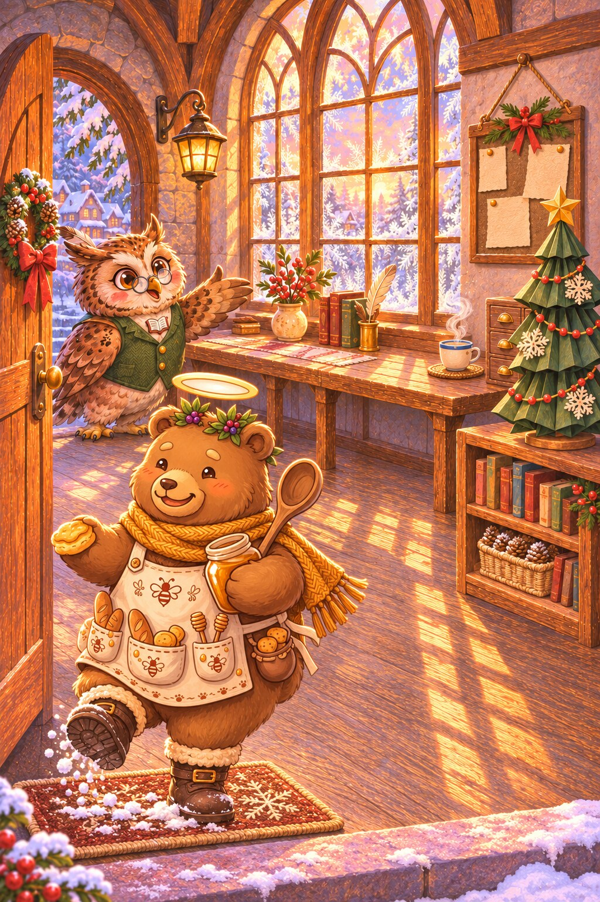
Page 1 of 26
Christmas morning turned the library steps pink.
Ted-E-Bear stamped the snow off his boots. Inside, Professor Hooten was putting an extra cup on the table. Every chair had a cup beside it already.
“Who’s that for?” asked Ted.
“We might need it,” said Hooten.
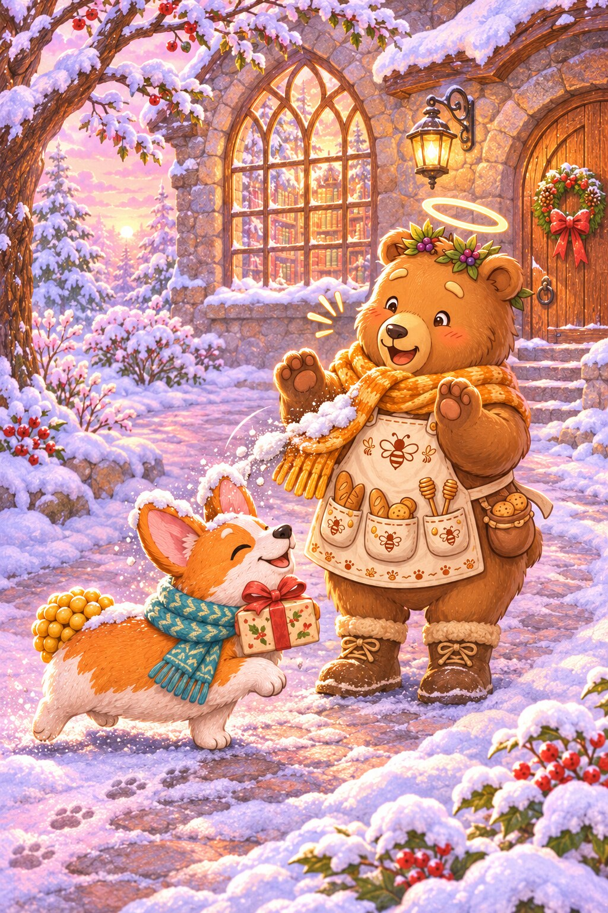
Page 2 of 26
Corgi-on-the-Cob came skidding up the path with a parcel under his chin.
“Did I miss the presents?”
“You missed a chance to walk slowly,” said Ted.
Corgi shook snow out of his ears. A whole lump dropped down the back of Ted’s scarf.
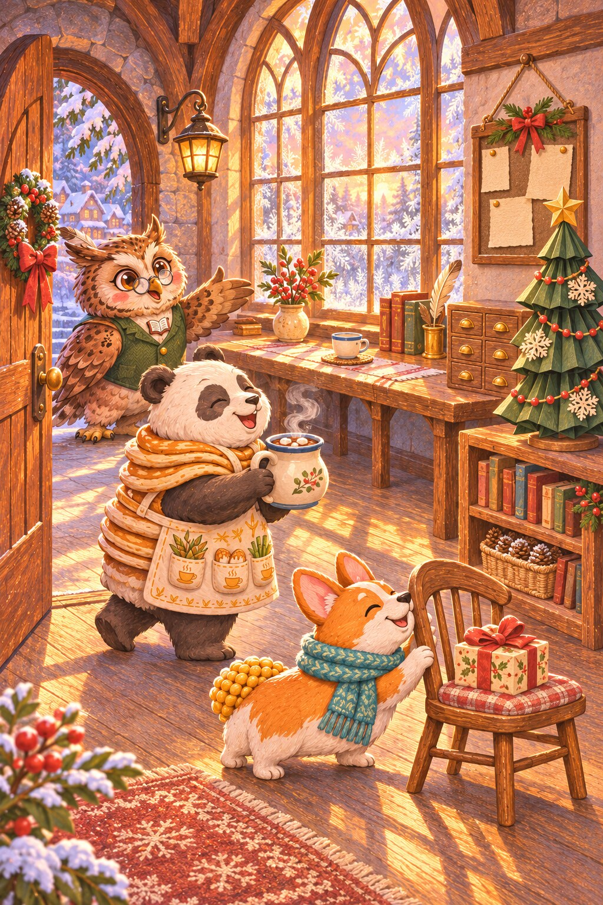
Page 3 of 26
Panda-Cake carried in a warm jug of cocoa. Hooten pulled the chairs into a ring around the paper tree they’d made for the hall.
“A little room by the door, please,” Hooten said.
Corgi moved his chair. Then he moved it back a tiny bit. From there he could see his parcel.
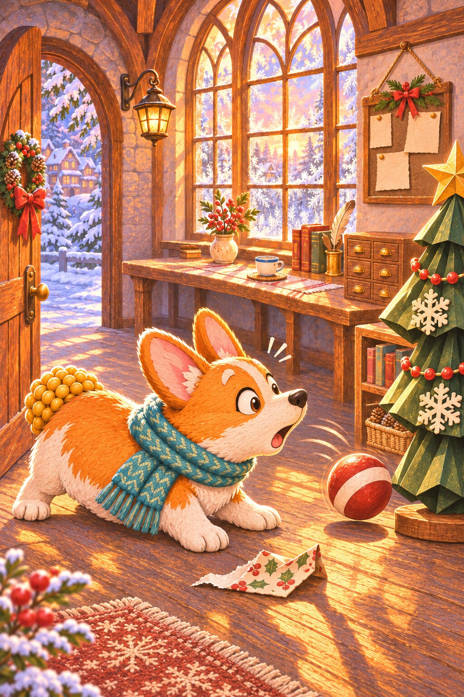
Page 4 of 26
Corgi’s gift from Ted was a red ball with a white stripe. Corgi rolled it along his nose and caught it under his chin.
“I can do three in a row,” he said.
The ball rolled behind the tree on the second go.
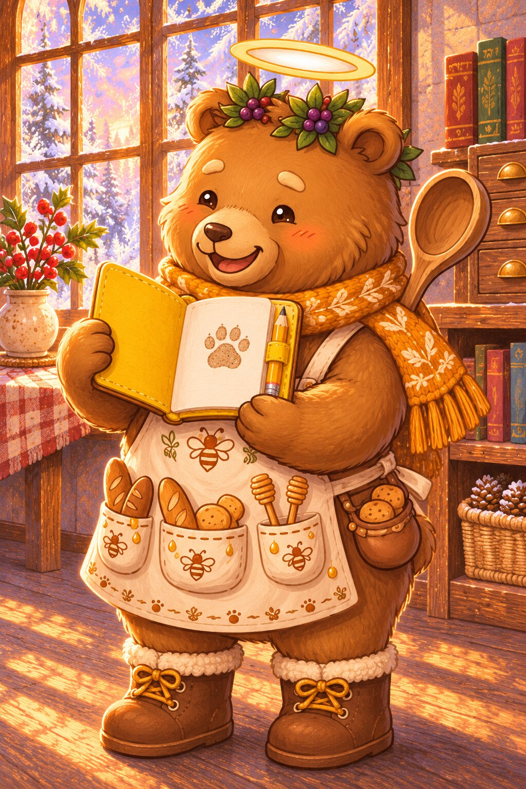
Page 5 of 26
Ted opened Corgi’s gift. It was a yellow notebook with a pencil tucked through a loop. The first page was quite clean, except for one sandy paw print.
“That’s so you know which way up it goes,” said Corgi.
Ted decided to leave the print right where it was.
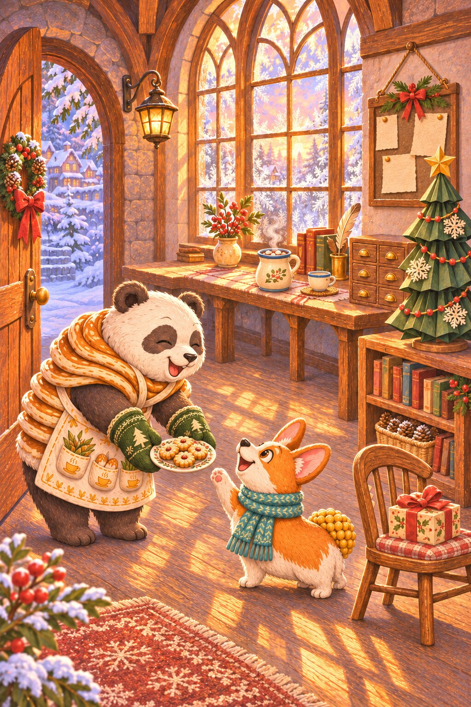
Page 6 of 26
Panda-Cake tried on his new green oven mitts. He could pick up the warm jug with them, but he couldn’t pick up a single biscuit.
He held the plate for Corgi instead.
When the paper had been gathered and folded, Hooten said, “That’s the presents opened.”
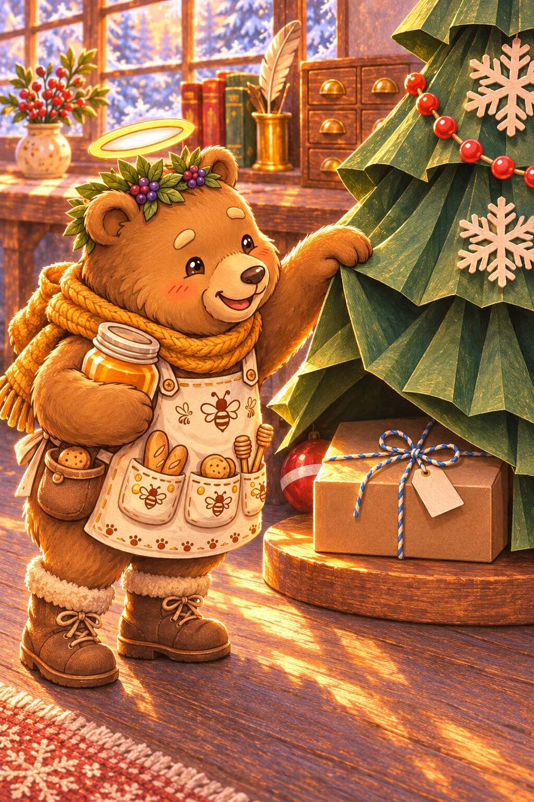
Page 7 of 26
Ted bent to get the red ball from behind the tree. Something blue caught his eye under the lowest branch.
It was a cord, tied around a plain brown box. A tag stuck out from the knot.
“Wait,” Ted said. “There’s one left.”
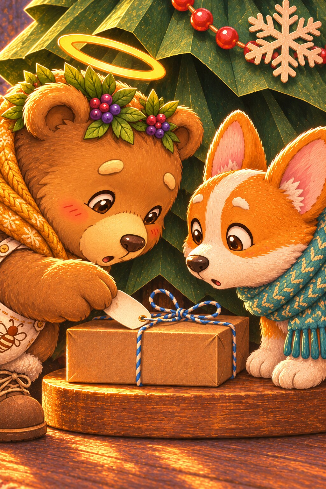
Page 8 of 26
Corgi put his nose right up to the tag. Ted turned it so they could both see.
It said, “For whoever gets there last.”
“That’s me,” said Corgi. “I was the last one through the door.”
Ted looked at the cup without a chair.
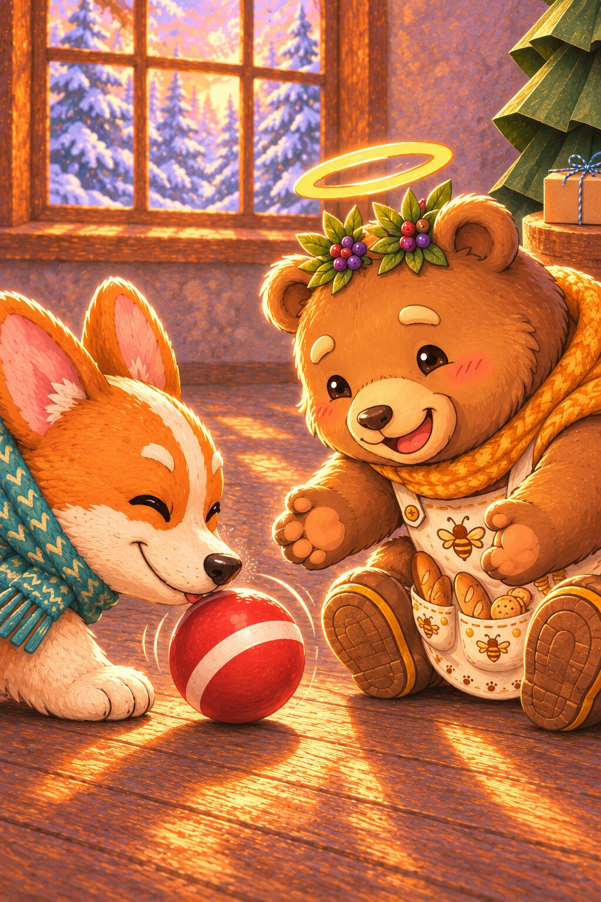
Page 9 of 26
“You were the last so far,” Ted said.
Corgi sat down. “If someone else comes, do I give it back?”
“You haven’t picked it up.”
“Good. Then I’ve already given it back.”
He left the parcel where it was and nudged his ball over to Ted.
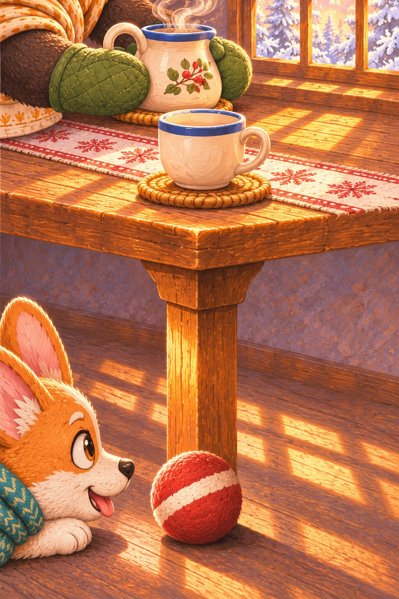
Page 10 of 26
They rolled the ball towards the table. It stopped by the extra cup.
“Maybe ‘there’ means here,” said Corgi. “Whoever gets their cocoa last.”
Panda-Cake set the jug down. “That’ll be me if I have to pour it for everyone first.”
His own cup stood empty next to the jug.
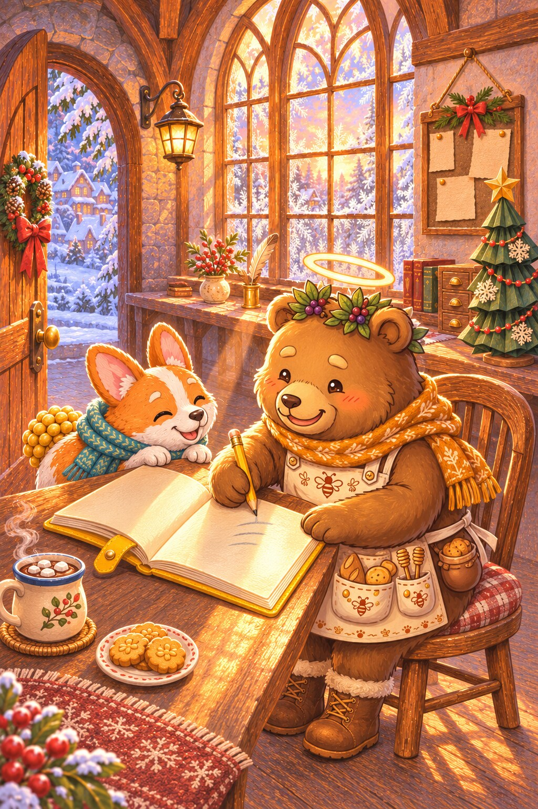
Page 11 of 26
Ted turned to the first clean page of his notebook.
He wrote DOOR on one line and COCOA on another.
“Presents?” said Corgi.
“We’ve all opened ours.”
“I know. But what if someone hasn’t?”
Ted wrote PRESENTS underneath. Now there were three things that “there” could mean.
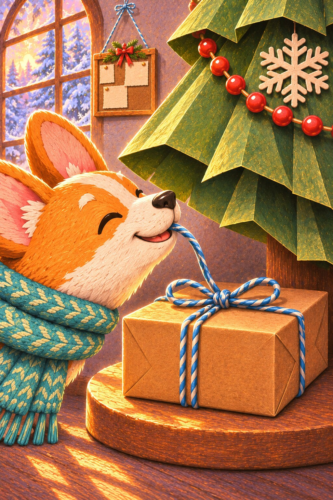
Page 12 of 26
Corgi went back to the tree. He held one end of the blue cord up in the light.
“Look at that knot,” he said. “The end goes back through twice.”
He pointed towards the wall. The library’s noticeboard hung from a cord with the very same knot.
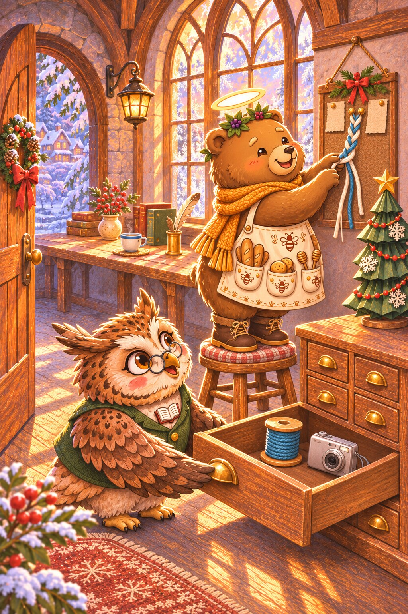
Page 13 of 26
Ted climbed onto a low stool so he could see. Both cords had three thin white strands twisted through the blue.
“Hooten keeps a whole spool of it in his drawer,” he said.
Just then, Hooten opened that drawer. Inside, beside the string, lay a little silver camera.
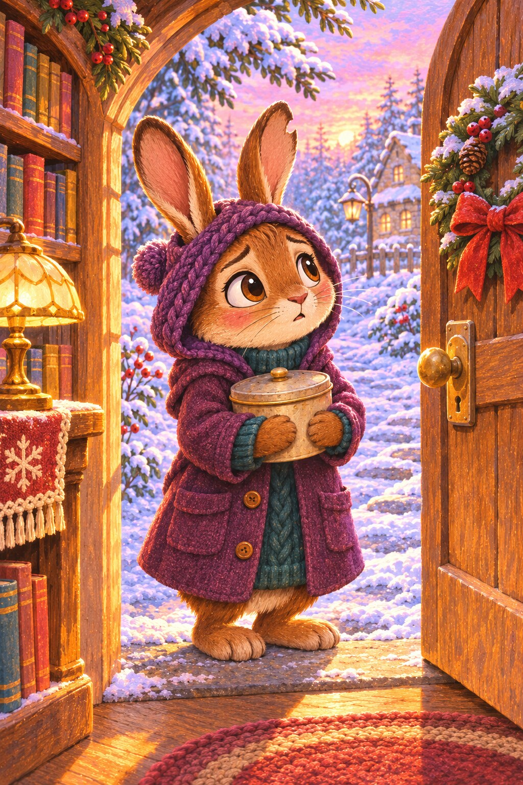
Page 14 of 26
Before Ted could ask about the cord, there was a knock.
Corgi rushed over. Hooten reached the door first.
On the step stood a young hare in a plum coat. Her ears stuck out of a knitted hood. She held a tin against her chest.
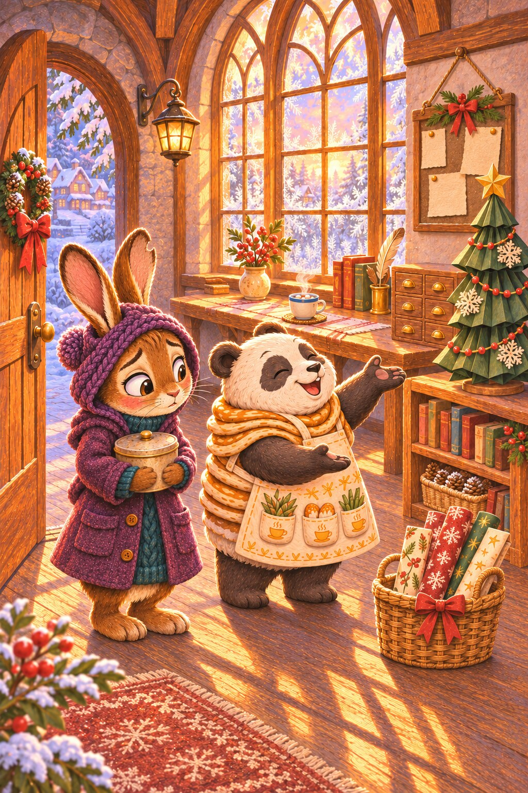
Page 15 of 26
“I’m Moss,” said the hare. “We moved into the house by the bridge. The snow was up to my knees.”
She looked at the folded wrapping paper.
“I’ve missed it, haven’t I?”
“The cocoa’s warm,” said Panda-Cake. “Come and show me what’s in your tin.”
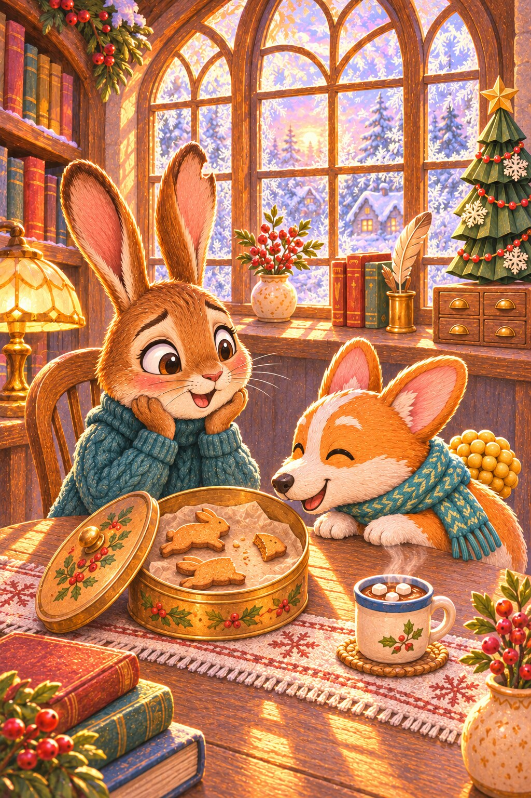
Page 16 of 26
Moss had brought ginger biscuits. Some were shaped like hares. One was shaped like half a hare.
“I dropped that one,” she said.
“That’s the one I’d choose,” said Corgi. “It’s already started.”
Moss smiled and took off her coat. Her ears sprang straight out of the hood.
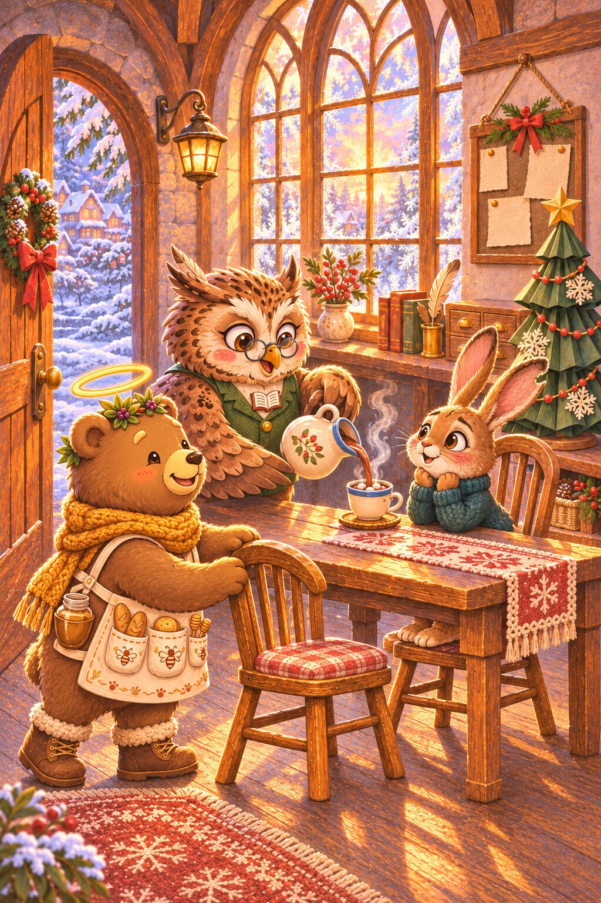
Page 17 of 26
Hooten poured cocoa into the extra cup. Ted fetched a chair so Moss could sit at the table.
“You kept her cup ready,” Ted said to Hooten.
“I kept a cup ready,” said Hooten. “I didn’t know whose it would be.”
Ted thought about the box under the tree.
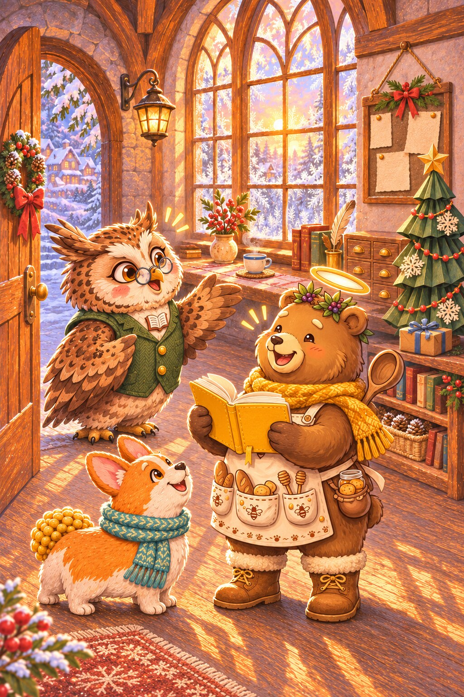
Page 18 of 26
Ted held up his notebook.
“We guessed it might mean the door. Or the cocoa. Then Corgi said the presents. Is that what ‘there’ means?”
Hooten nodded. “I tied that parcel for whoever came after the others had opened theirs.”
“So there’d still be one,” said Corgi.
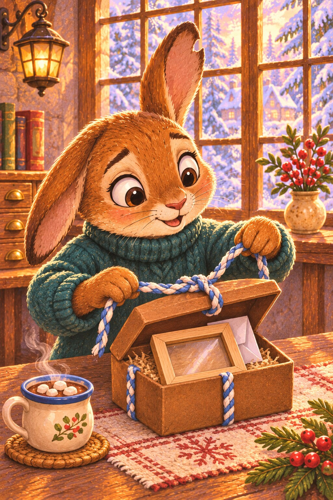
Page 19 of 26
Ted picked up the box. “Moss, I think it’s yours.”
She tucked one long ear behind her shoulder so it wouldn’t dip in her cocoa. Then she pulled the loose end of the cord.
Inside the box lay a small wooden frame. There was no picture in it.
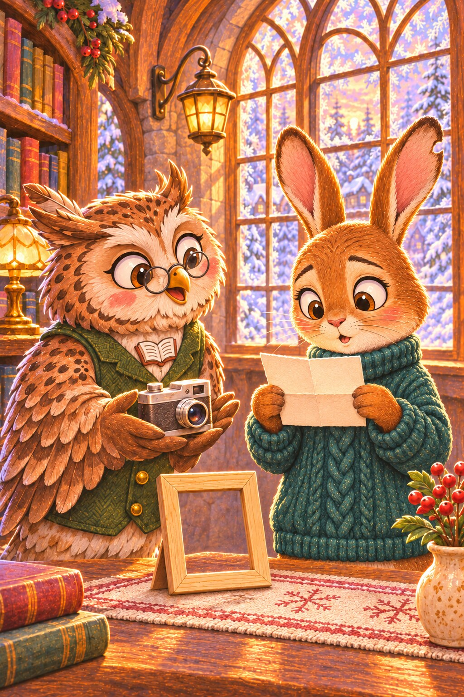
Page 20 of 26
A folded note sat behind the glass. Moss read it aloud.
“Choose our first Christmas morning picture.”
Professor Hooten brought over the silver camera. “I thought we could put up a new one every Christmas,” he said. “You get to choose what goes in the first frame.”
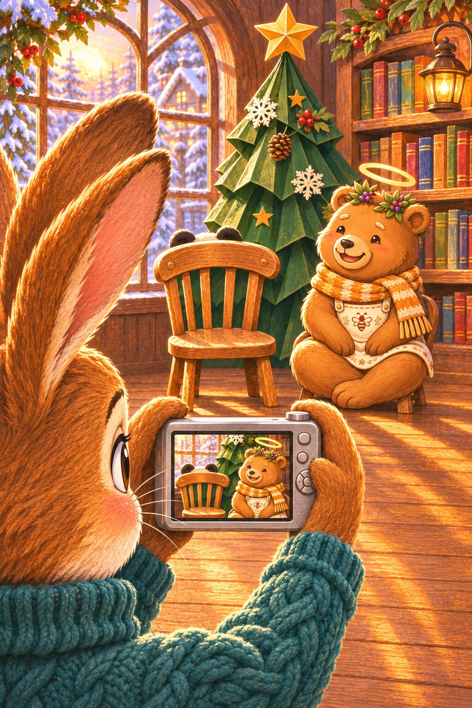
Page 21 of 26
“I can take a good one,” said Moss. “I take pictures of the birds by our bridge.”
She lifted the camera. Through it she could see a bit of the tree and most of Ted. Panda-Cake was hidden behind a chair.
“We’ll have to move the chairs.”
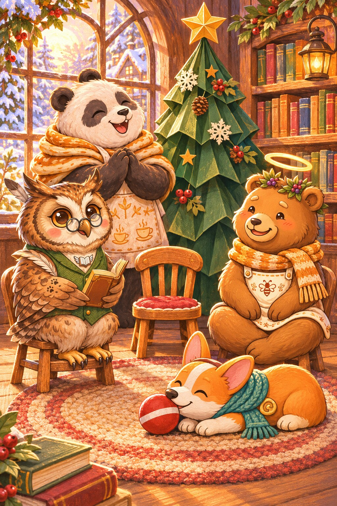
Page 22 of 26
Moss put the chairs near the tree. She asked Hooten to sit down and Panda-Cake to stand behind him.
Ted sat on the floor. Corgi lay beside Ted with his nose on the red ball.
Moss raised the camera again. There was exactly one empty chair in the picture.
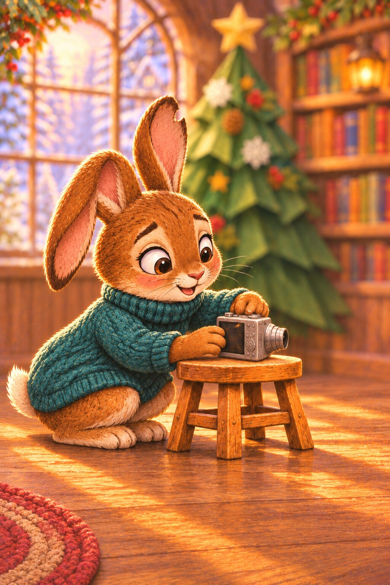
Page 23 of 26
“That one’s for you,” said Ted.
“I’m usually behind the camera,” Moss said.
Hooten showed her a little switch. “This gives you ten seconds to get to the chair.”
Moss set the camera on a low wooden stool and aimed it at the tree. “I can get there in four.”
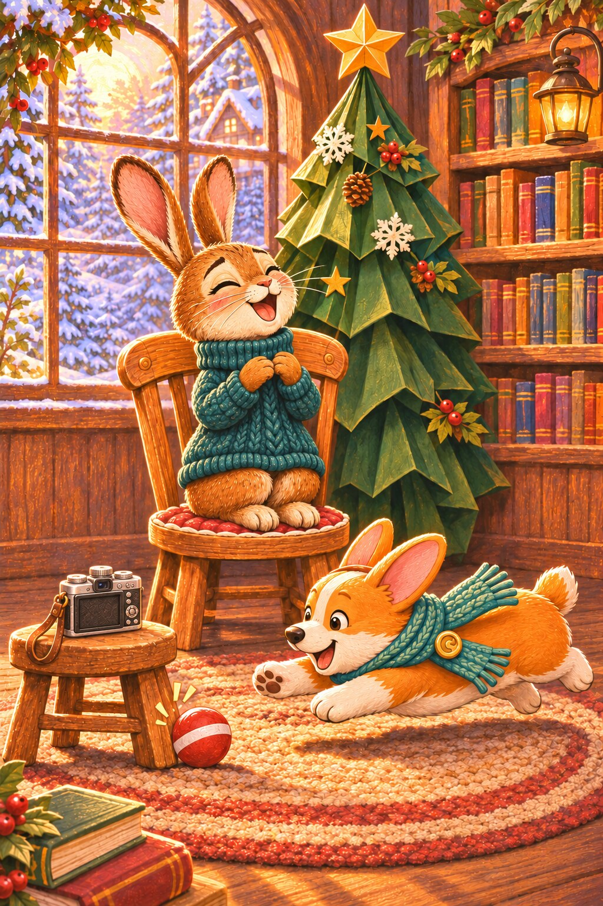
Page 24 of 26
Moss pressed the button and hurried over. One, two, three, four. She made it.
Then Corgi tried to grin without letting go of his ball. It slipped from under his nose and bumped the stool.
Click.
“I think it took me jumping,” said Corgi.
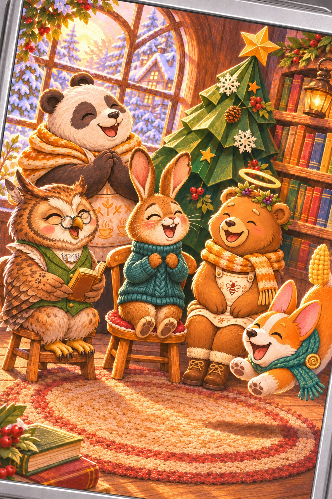
Page 25 of 26
Hooten held out the camera. On the little screen was a crooked picture. The tree leaned sideways. Corgi was halfway out of the picture, with his tail straight up.
Everyone else was laughing. Moss was right in the middle of them.
“We could take another,” said Hooten.
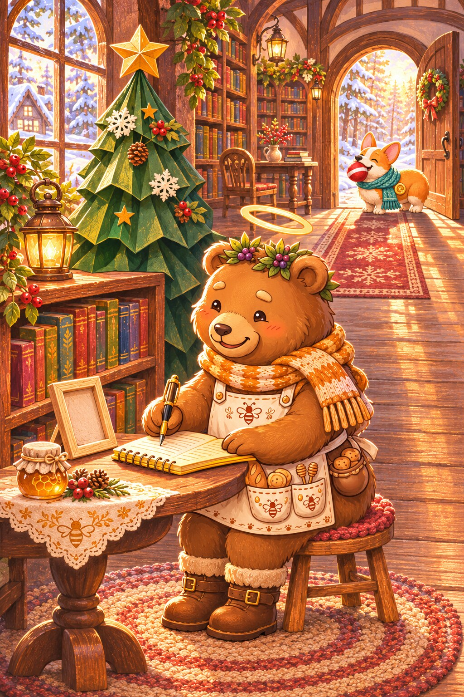
Page 26 of 26
“I choose that one,” said Moss.
She put the empty frame on the shelf next to the tree. Ted opened his notebook and wrote the date, ready for when they printed the picture.
Corgi carried his ball to the door. He waited there until everybody else had gone through.
The end · Thank you for reading
Share another story
A SnackPack original story, free to read online or print.